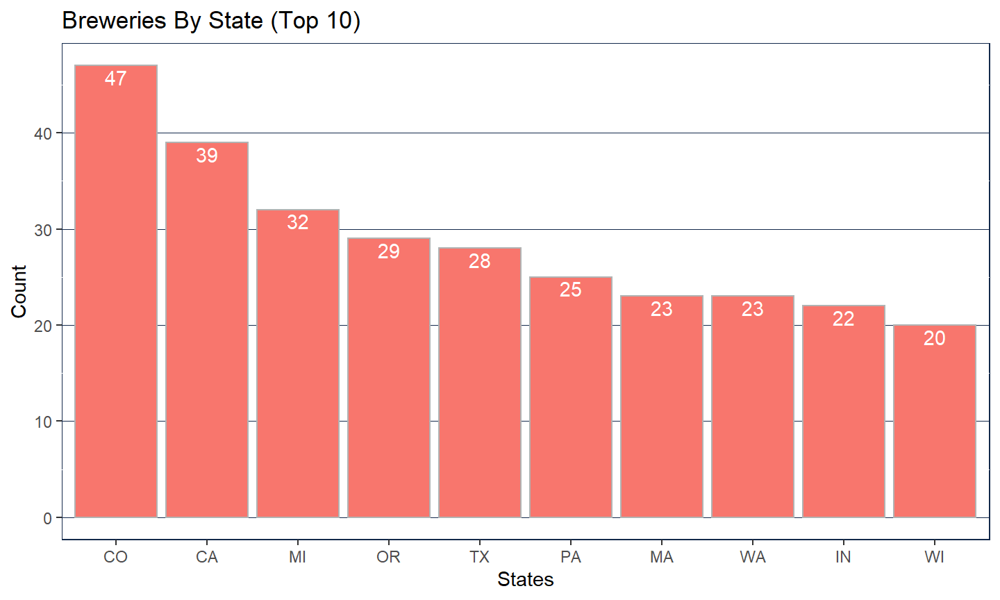
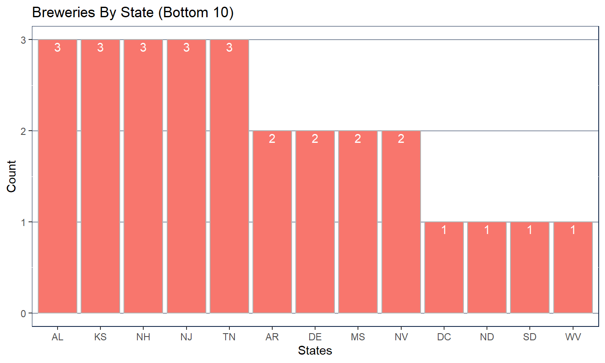
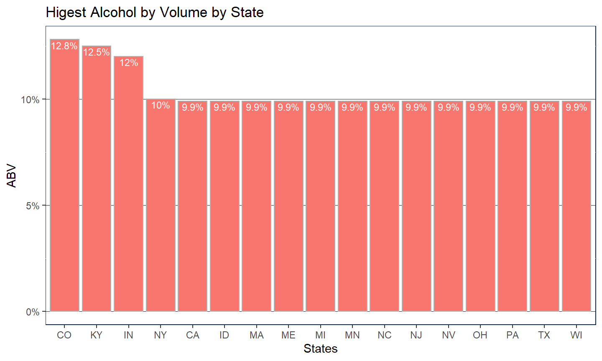
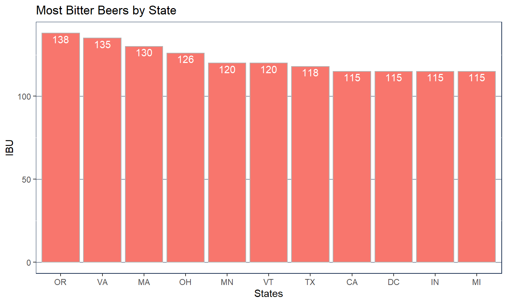
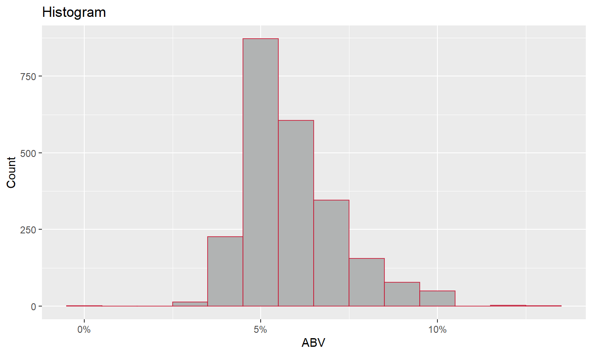
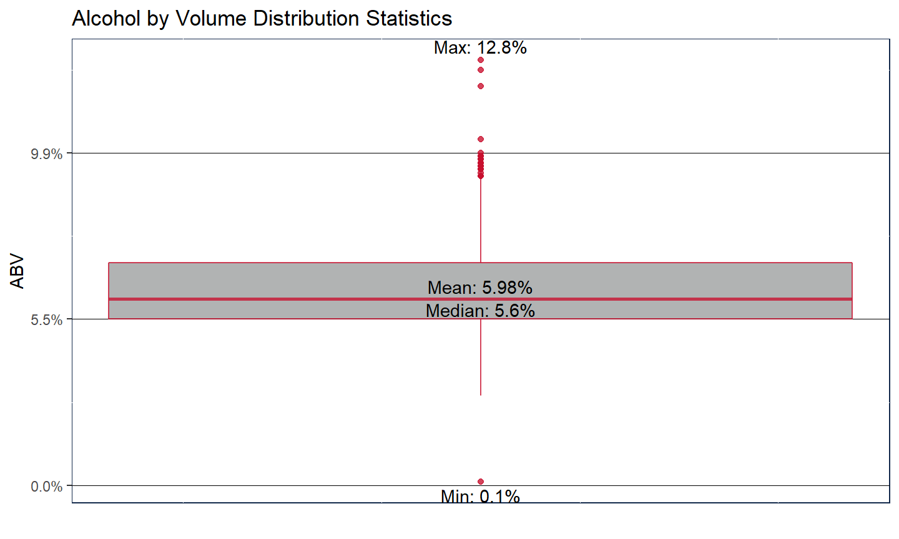
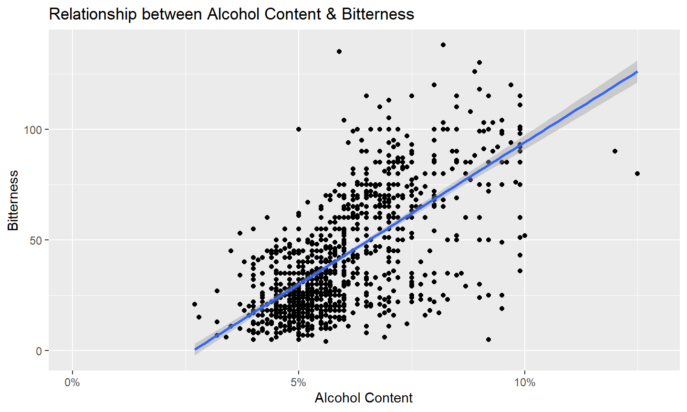
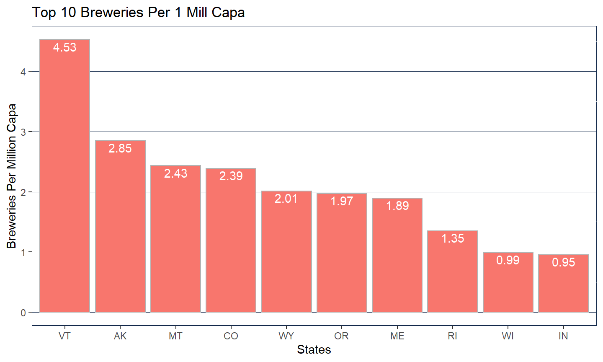
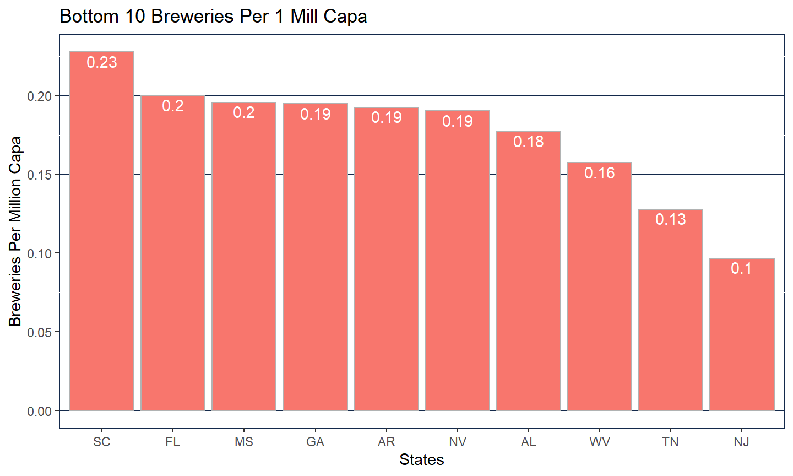

10/25/2019
Introduction
- Project – Budweiser Data Discovery and Analysis
- Team Members
- Marc Carter
- Gavin Rick
- David Coppiellie
Thank You, Mr. Doukeris and Mr. Jamel for this and future opportunities to provide data insight and analysis for your team at Budweiser
Presentation: Project 1
Review of Tasks
- Provide analysis of the data supplied by the Budweiser team to include…
- Breweries per state
- Statistics of ABV and IBU
- The relationship between ABV and IBU
- Specifically look into the relationship between IPA’s and other Ale’s
Our process
- Import and Clean Data
- Inspect data for obvious inconsistencies
- Decisions on missing data
- Look for other methods to fill in missing data
- Import supporting data (as needed)
- Complete analysis tasks
- Look for other useful information
Breweries Per State
States with the Most Breweries

States with the least Breweries

Statistics by State
Median AVB & IBU by State
Highest Alcohol Beer by State

Most Bitter Beer by State

Alcohol By Volume Distribution

Alcohol By Volume Distribution

ABV and IBU Relationship

IPAs vs Ales
Classifications
|
|
IPA
|
ALE
|
|
IPA
|
88
|
36
|
|
ALE
|
12
|
149
|
|
Accuracy : 83.15 %
|
|
Misclass : 16.84 %
|
|
Sensitivity : 88.00 %
|
|
Specificity : 80.54 %
|
Breweries per Capa (Top 10)

Breweries per Capa (Bottom 10)

Conclusion
- Thank You for your time and attention.